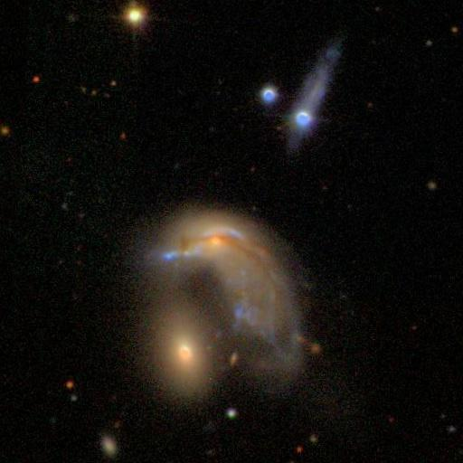
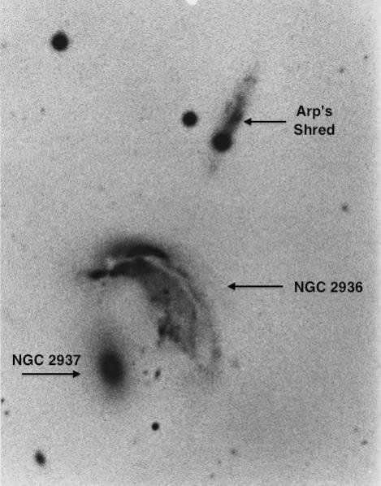

Arp 142 and his "Shred"
- Name: NGC 2936
- Name: V = 13.1; Size 1.6'x0.9
- Surf Br: 13.3
- P.A.: 35d
- Name: V = 13.7; Size 0.8'x0.4
- P.A.: 15d
- Name: V = 16.4; Size 0.7'x0.2
- P.A.: 155d
In his 1966 "Atlas of Peculiar Galaxies", Halton Arp classified this highly disrupted system as "Material Emanating From Elliptical Galaxies", while Madore, Nelson and Petrillo include it as a Ring system in their 2009 "Atlas and Catalog of Collisional Ring Galaxies".
Although I had previously viewed the brighter 1' pair, NGC 2936 and NGC 2937, I was curious how the trio appeared in Jimi Lowrey's 48", and had an opportunity to take a close look last month, along with Jim Chandler and Jerry Morris.
NGC 2936 is a bright, disrupted galaxy with a highly irregular surface brightness and a curving shape with a faint tail. At 375x and 488x, the central region is extended E-W, roughly 30"x20", with a very small bright nucleus. A low surface brightness "tail" is attached on the west side of the bright central region. The relatively broad tail sweeps SSW for ~45", gradually dimming out due west of the center of NGC 2937. The tail significantly increases the overall dimensions of the galaxy to at least 1.2'x0.6'.
NGC 2937 appeared bright, fairly small, oval 3:2 SSW-NNE, ~0.5'x0.25', with a high surface brightness and a very small intense nucleus. The cores of 2936 and 2937 are separated by less than 1'.
Arp's "Shred" is PGC 1237172, a challenging galaxy attached to a 13th magnitude star just 1.3' NW of NGC 2936. At 488x, it appeared as a very faint, very low surface brightness streak, extending ~18"x5" NW-SE.
Madore labels PGC 1237172 as a "collider" with NGC 2936, but in a 1967 paper titled "Peculiar Galaxies and Radio Sources" (ApJ...148..321), Arp argues that this faint streak is an ejected "shred" or "jet" of NGC 2936 as its major axis is aligned perfectly with NGC 2936.
NGC 2936 and 2937 should present no problems in most scopes, but can you glimpse the "Shred"?
SDSS image

"GIVE IT A GO AND LET US KNOW"
GOOD LUCK AND GREAT VIEWING!
Labeled ARP image
